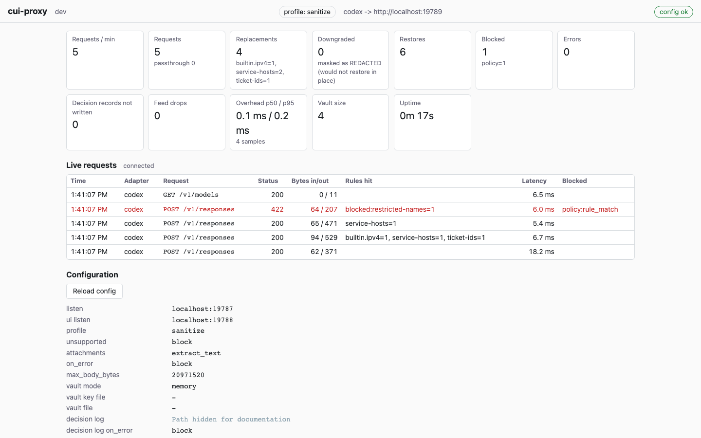
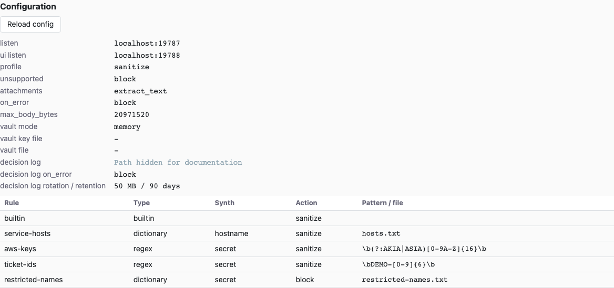
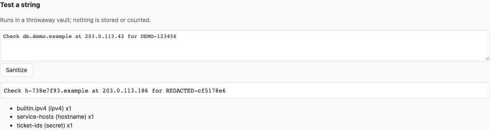

Dashboard¶
The dashboard shows what the running proxy is doing and lets you test rules
without sending a model request. Open http://localhost:8788/ with the default
configuration. If you changed ui.listen, use the URL printed at startup or by:
The proxy and dashboard use different ports: Codex connects to port 8787; your browser connects to port 8788. Start with the quick start or full tutorial if the proxy is not running yet.
Screenshots use an isolated source-build demo with fabricated data on ports 19787/19788; your configured ports and attachment mode may differ.

Header and connection state¶
The header shows the binary version, active policy profile, and configured
upstream URLs. config ok means the configuration endpoint was fetched; it
does not prove that Codex is routed through the proxy or that the upstream is
reachable. config unavailable means that fetch failed.
The status beside Live requests describes the event connection. It normally
reads connected. A disconnected feed retries; if it eventually says
live feed failed (reload the page), refresh the browser. Metrics refresh every
two seconds independently of the feed.
Metrics cards¶
Counters belong to the running process and reset on restart. Reloading rules does not reset them. Counts describe proxy activity, not the number of prompts or conversations: one client operation can generate several requests.
| Card | What it means |
|---|---|
| Requests / min | Requests received by the proxy during the last 60 seconds, including blocked requests. |
| Requests | Total requests received. The passthrough subcount is requests forwarded with their original body after an eligible sanitizer failure under policy.on_error: passthrough. |
| Replacements | Values replaced, with counts by detector rule. This counts transformation work, so replacements can occur even when a request is later refused. |
| Downgraded | Replacements changed to a REDACTED-… token because the original class's synthetic would not restore in that context. These are also included in Replacements. The token still has a reversible vault mapping. |
| Restores | Rewritten response events, including buffered delta re-chunking and flush events. This is an approximation of restoration activity, not a count of distinct values; it need not equal Replacements. |
| Blocked | Requests refused by the proxy, with counts by reason. A policy block is an expected decision, not necessarily an internal error. |
| Errors | Internal or upstream-processing failures counted by the proxy. This is not a count of every non-200 upstream status. |
| Decision records not written | Failed attempts to write a persistent decision record. Depending on effective audit policy, the request was blocked or continued with a warning. Investigate any increase. |
| Feed drops | Events not delivered to slow dashboard subscribers. This concerns the in-memory live feed, not missing persistent decision records. Multiple slow subscribers can each contribute drops. |
| Overhead p50 / p95 | Proxy-added processing latency for the most recent, at most 4,096 samples. The sample count is shown below. This is not end-to-end model response time. |
| Vault size | Current live mapping count, updated after proxy requests finish. It can grow even for a request that is ultimately blocked. |
| Uptime | Time since the process's metrics registry was created. |
For failure behavior, see policy. For the distinction between the live feed and durable evidence, see decision log.
Live requests¶
Rows appear when requests finish, including when a streaming response ends. Newest rows come first; the browser retains at most 200. The server keeps a separate in-memory ring of up to 500 events, from which the browser loads a recent snapshot on connection. Neither is a permanent history.
| Column | How to read it |
|---|---|
| Time | Request start time rendered in your browser's local time zone. |
| Adapter | Protocol adapter, currently codex. |
| Request | HTTP method and request path. Query values and request bodies are not displayed. |
| Status | HTTP status sent to the client. A stream that fails after headers were sent can still show an initial success status; read Blocked and logs too. |
| Bytes in/out | Recorded request-body bytes read and response bytes written to the client; these are not token counts. An early refusal may read no body. |
| Rules hit | Detector names and counts, such as builtin.email=1. A blocked detection can appear as blocked:<rule>. |
| Latency | Total elapsed request time, including the upstream and streamed response. This differs from the overhead card. |
| Blocked | Reason code, sometimes with a kind such as sanitize:bad_body. Blank means no block reason was recorded; it is not a sanitization guarantee. |
Hover a row to see its request ID and an explain command hint. Use the actual
service config when looking up that ID:
Replace REQUEST-ID with the 16-character hexadecimal ID. The persistent log
records the forwarding decision before contacting the upstream. The live row
records the eventual request outcome; an upstream error after forwarding can
therefore coexist with a forwarded or sanitized decision.
Effective configuration¶

The Configuration panel shows active values, including loader defaults. It is not an editor. Change the YAML file or dictionary on disk, then reload or restart as required.
The fields cover proxy and UI listeners; policy profile, attachment handling (from v0.4.0), unsupported-content handling, sanitizer error handling and body limit; vault mode and file paths; and decision-log location, write-failure policy, rotation size and retention. A dash means a path or setting is not applicable. Upstreams appear in the header. The field reference explains every setting.
The rule table has these columns:
| Column | Meaning |
|---|---|
| Rule | Your configured rule name. Built-in detector results add a suffix, for example a bundle named builtin produces builtin.email. |
| Type | builtin, regex, or dictionary. |
| Synth | Replacement class for a custom regex or dictionary rule. |
| Action | Effective sanitize or block, after applying the profile. Omitted YAML actions are resolved here. |
| Pattern / file | Regex pattern or dictionary file path from configuration. It does not show dictionary entries. |
A normal builtin row has blank Synth and Pattern / file cells: the bundle
supplies its own patterns and classes internally. Blank cells do not mean it
is inactive. Built-in fields are not customization controls; see
rules for the detector set and custom rule syntax.
The dashboard avoids displaying prompt bodies, credentials, vault contents, and dictionary entries. It does display rule names, regex patterns, file paths and upstream URLs. Those can disclose local usernames or internal naming conventions. Inspect and redact screenshots before sharing them. In particular, never put secret values in rule names or embed credentials in upstream URLs. Text you type into Test a string and its output are visible in the browser.
Reload config¶
Click Reload config after saving an edit. The running process rereads the
same config file and its dictionary files; the button does not choose a file.
A successful reload displays reloaded with a time and refreshes the effective
configuration. A validation or rule-build failure keeps the old rules active.
Reload applies rules, dictionary contents, policy.profile, policy.on_error,
policy.attachments (from v0.4.0), and policy.max_body_bytes. In-flight requests
finish with the snapshot they started with. Existing vault mappings remain available.
Listener addresses, upstreams, allow_non_loopback, vault settings and all
explicit audit-setting changes need a restart. A reload can succeed while
keeping these running values; the daemon logs WARN restart required for: ….
Check the effective panel rather than assuming the saved file is active.
Strict policy requires a running decision log. If it was disabled at startup,
reloading to strict is refused; enable audit and restart. When audit.on_error
was omitted, profile changes still enforce the profile's effective audit
failure behavior. See configuration and
decision log for details.
For a generic reload error, run this locally for detailed diagnostics:
Detailed YAML and regexp diagnostics can quote configuration text. Review them
before sharing. The dashboard deliberately uses the generic message
configuration or rule files could not be loaded; run cui-proxy check-config locally for details.
Test a string¶
This is a local rule experiment, using the currently loaded detectors and their effective actions. It creates a fresh, random-key, in-memory vault for each click. It makes no upstream request, does not use or save the live vault, does not append a proxy request or decision-log record, and does not change the proxy's counters. The temporary mappings are discarded after the test.

Try the following with the built-in bundle and the sanitize profile:
- Check that the header says
profile: sanitizeand the bundle's action issanitize. - Paste this fabricated text into Test a string:
- Click Sanitize.
- Confirm that the address becomes a synthetic address and the list includes
builtin.email (email) x1if your bundle is namedbuiltin. The exact synthetic value varies; compare structure and counts rather than a fixed token. - Test
Send the demo report tomorrow.and expect unchanged text withno matches.
Under strict, the first test is expected to fail instead of showing masked
text. For a bundle named builtin, the UI displays exactly:
An explicit action: block has the same effect under sanitize. A blocking
detection returns no successful sanitized result or match list. The endpoint
uses HTTP 422 for this decision. A transformation failure instead displays:
Other endpoint errors include text too large (HTTP 413) and malformed request
(HTTP 400). A network failure may display only error.
Iterate on a custom rule¶
Use a separate demo configuration if you are experimenting with policy. Recipes supplies complete files; the following workflow changes an existing rule rather than replacing an entire config:
- Add or edit a custom rule on disk. For a regex, use a fabricated identifier
such as
DEMO-1234, pattern'\bDEMO-[0-9]{4}\b', andsynth: secret. For a dictionary, adddemo-projecton its own line in the configured file. - Run
check-config, then click Reload config. Confirm the rule and effective action in the table. Editing a file alone does not update the running detectors. - Test a positive case, repeated occurrences, and a negative near miss. For the
regex above, try
DEMO-1234 DEMO-5678and thenDEMO-123. - Test context: punctuation, adjacent letters, case differences and newlines. Dictionaries are case-insensitive literals with alphanumeric boundaries; regex behavior follows your pattern.
- Check the reported rule/class/count. All detectors run, so overlapping built-in or custom matches can affect which span is reported; a block wins over an overlapping sanitize match.
- Correct the pattern, dictionary or synth class, validate, reload, and repeat. Test against representative fabricated samples before using the rule.
What this test does and does not prove¶
The endpoint limits the entire JSON request body to 1 MiB; JSON escaping adds
overhead, so the usable text can be smaller. For larger local text samples,
test-rules accepts up to 8 MiB on stdin.
The test checks plain-text matching and reversible transformation. It does not
exercise Codex request structure, workspace metadata, headers, query checks,
authentication, upstream routing, streaming restoration, or persistence.
no matches means only that the loaded detectors found none in that text.
Use local and end-to-end testing and verification
for broader checks. Architecture, limitations
and the glossary explain the boundaries.
The dashboard is a local operational surface with no login. It rejects
non-loopback Host headers and cross-origin writes. Keep the listener on
loopback; do not expose it through a remote forwarding service. These guards
are not remote authentication.